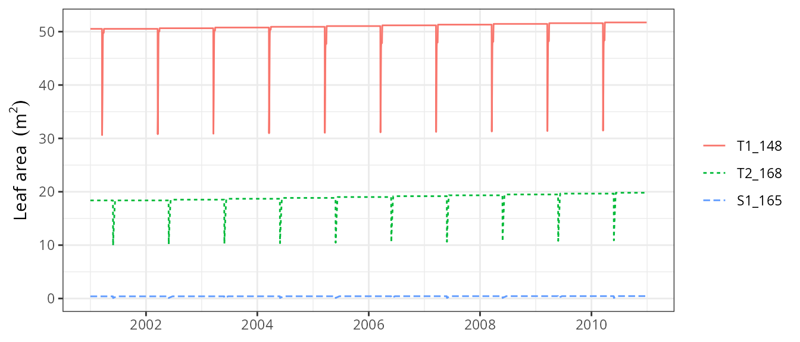

Forest dynamics
Miquel De Caceres
2025-12-03
Source:vignettes/runmodels/ForestDynamics.Rmd
ForestDynamics.RmdAbout this vignette
This document describes how to run the forest dynamics model of
medfate, described in De Cáceres et al. (2023) and
implemented in function fordyn(). This document is meant to
teach users to run the simulation model with function
fordyn(). Details of the model design and formulation can
be found at the corresponding chapters of the medfate
book.
Because the model builds on the growth and water balance models, the
reader is assumed here to be familiarized with spwb() and
growth() (otherwise read vignettes Basic
water balance and Forest
growth).
Preparing model inputs
Any forest dynamics model needs information on climate, vegetation
and soils of the forest stand to be simulated. Moreover, since models in
medfate differentiate between species, information on
species-specific model parameters is also needed. In this subsection we
explain the different steps to prepare the data needed to run function
fordyn().
Model inputs are explained in greater detail in vignettes Understanding
model inputs and Preparing
model inputs. Here we only review the different steps required
to run function fordyn().
Soil, vegetation, meteorology and species data
Soil information needs to be entered as a data frame
with soil layers in rows and physical attributes in columns. Soil
physical attributes can be initialized to default values, for a given
number of layers, using function defaultSoilParams():
examplesoil <- defaultSoilParams(4)
examplesoil## widths clay sand om nitrogen bd rfc
## 1 300 25 25 NA NA 1.5 25
## 2 700 25 25 NA NA 1.5 45
## 3 1000 25 25 NA NA 1.5 75
## 4 2000 25 25 NA NA 1.5 95As explained in the package overview, models included in
medfate were primarily designed to be ran on forest
inventory plots. Here we use the example object provided with
the package:
data(exampleforest)
exampleforest## $treeData
## Species DBH Height N Z50 Z95
## 1 Pinus halepensis 37.55 800 168 100 300
## 2 Quercus ilex 14.60 660 384 300 1000
##
## $shrubData
## Species Height Cover Z50 Z95
## 1 Quercus coccifera 80 3.75 200 1000
##
## attr(,"class")
## [1] "forest" "list"We can keep track of cohort age if we define a column called
Age in tree or shrub data, for example let us assume we
know the age of the two tree cohorts:
exampleforest$treeData$Age <- c(40, 24)Importantly, a data frame with daily weather for the period to be simulated is required. Here we use the default data frame included with the package:
## dates MinTemperature MaxTemperature Precipitation MinRelativeHumidity
## 1 2001-01-01 -0.5934215 6.287950 4.869109 65.15411
## 2 2001-01-02 -2.3662458 4.569737 2.498292 57.43761
## 3 2001-01-03 -3.8541036 2.661951 0.000000 58.77432
## 4 2001-01-04 -1.8744860 3.097705 5.796973 66.84256
## 5 2001-01-05 0.3288287 7.551532 1.884401 62.97656
## 6 2001-01-06 0.5461322 7.186784 13.359801 74.25754
## MaxRelativeHumidity Radiation WindSpeed
## 1 100.00000 12.89251 2.000000
## 2 94.71780 13.03079 7.662544
## 3 94.66823 16.90722 2.000000
## 4 95.80950 11.07275 2.000000
## 5 100.00000 13.45205 7.581347
## 6 100.00000 12.84841 6.570501Finally, simulations in medfate require a data frame
with species parameter values, which we load using defaults for
Catalonia (NE Spain):
data("SpParamsMED")Simulation control
Apart from data inputs, the behaviour of simulation models can be
controlled using a set of global parameters. The default
parameterization is obtained using function
defaultControl():
control <- defaultControl("Granier")Here we will run simulations of forest dynamics using the basic water
balance model (i.e. transpirationMode = "Granier"). The
complexity of the soil water balance calculations can be changed by
using "Sperry" as input to defaultControl().
However, when running fordyn() sub-daily output will never
be stored (i.e. setting subdailyResults = TRUE is
useless).
Executing the forest dynamics model
In this vignette we will fake a ten-year weather input by repeating the example weather data frame ten times.
meteo <- rbind(examplemeteo, examplemeteo, examplemeteo, examplemeteo,
examplemeteo, examplemeteo, examplemeteo, examplemeteo,
examplemeteo, examplemeteo)
meteo$dates <- as.character(seq(as.Date("2001-01-01"),
as.Date("2010-12-29"), by="day"))Now we run the forest dynamics model using all inputs (note that no
intermediate input object is needed, as in spwb() or
growth()):
fd<-fordyn(exampleforest, examplesoil, SpParamsMED, meteo, control,
latitude = 41.82592, elevation = 100)## Simulating year 2001 (1/10): (a) Growth/mortality## Package 'meteoland' [ver. 2.2.4]## , (b) Regeneration nT = 2 nS = 1
## Simulating year 2002 (2/10): (a) Growth/mortality, (b) Regeneration nT = 2 nS = 1
## Simulating year 2003 (3/10): (a) Growth/mortality, (b) Regeneration nT = 2 nS = 1
## Simulating year 2004 (4/10): (a) Growth/mortality, (b) Regeneration nT = 2 nS = 1
## Simulating year 2005 (5/10): (a) Growth/mortality, (b) Regeneration nT = 2 nS = 1
## Simulating year 2006 (6/10): (a) Growth/mortality, (b) Regeneration nT = 2 nS = 1
## Simulating year 2007 (7/10): (a) Growth/mortality, (b) Regeneration nT = 2 nS = 1
## Simulating year 2008 (8/10): (a) Growth/mortality, (b) Regeneration nT = 2 nS = 1
## Simulating year 2009 (9/10): (a) Growth/mortality, (b) Regeneration nT = 2 nS = 1
## Simulating year 2010 (10/10): (a) Growth/mortality, (b) Regeneration nT = 2 nS = 1It is worth noting that, while fordyn() calls function
growth() internally for each simulated year, the
verbose option of the control parameters only affects
function fordyn() (i.e. all console output from
growth() is hidden). Recruitment and summaries are done
only once a year at the level of function fordyn().
Inspecting model outputs
Stand, species and cohort summaries and plots
Among other outputs, function fordyn() calculates
standard summary statistics that describe the structural and
compositional state of the forest at each time step. For example, we can
access stand-level statistics using:
fd$StandSummary## Step NumTreeSpecies NumTreeCohorts NumShrubSpecies NumShrubCohorts
## 1 0 2 2 1 1
## 2 1 2 2 1 1
## 3 2 2 2 1 1
## 4 3 2 2 1 1
## 5 4 2 2 1 1
## 6 5 2 2 1 1
## 7 6 2 2 1 1
## 8 7 2 2 1 1
## 9 8 2 2 1 1
## 10 9 2 2 1 1
## 11 10 2 2 1 1
## TreeDensityLive TreeBasalAreaLive DominantTreeHeight DominantTreeDiameter
## 1 552.0000 25.03330 800.0000 37.55000
## 2 551.3664 25.20512 806.0861 37.66336
## 3 550.7271 25.37890 812.2308 37.77840
## 4 550.0822 25.55378 818.3875 37.89426
## 5 549.4296 25.72887 824.5297 38.01046
## 6 548.7731 25.90412 830.6434 38.12672
## 7 548.1108 26.07897 836.7194 38.24287
## 8 547.4427 26.25341 842.7541 38.35884
## 9 546.7669 26.42731 848.7458 38.47458
## 10 546.0871 26.60086 854.6935 38.59008
## 11 545.4053 26.77402 860.5971 38.70532
## QuadraticMeanTreeDiameter HartBeckingIndex ShrubCoverLive BasalAreaDead
## 1 24.02949 53.20353 3.750000 0.00000000
## 2 24.12567 52.83217 3.092078 0.03916504
## 3 24.22274 52.46290 3.140004 0.03982134
## 4 24.32029 52.09874 3.188583 0.04049084
## 5 24.41796 51.74134 3.237909 0.04128396
## 6 24.51563 51.39123 3.287821 0.04185981
## 7 24.61309 51.04885 3.338309 0.04255502
## 8 24.71033 50.71423 3.389378 0.04325657
## 9 24.80735 50.38732 3.441616 0.04408546
## 10 24.90416 50.06781 3.493269 0.04467935
## 11 25.00070 49.75543 3.545527 0.04514874
## ShrubCoverDead BasalAreaCut ShrubCoverCut
## 1 0.000000000 0 0
## 2 0.005308909 0 0
## 3 0.004784578 0 0
## 4 0.004858685 0 0
## 5 0.004947473 0 0
## 6 0.005010179 0 0
## 7 0.005087294 0 0
## 8 0.005165299 0 0
## 9 0.005258914 0 0
## 10 0.005324574 0 0
## 11 0.005374467 0 0Species-level analogous statistics are shown using:
fd$SpeciesSummary## Step Species NumCohorts TreeDensityLive TreeBasalAreaLive
## 1 0 Pinus halepensis 1 168.0000 18.604547
## 2 0 Quercus coccifera 1 NA NA
## 3 0 Quercus ilex 1 384.0000 6.428755
## 4 1 Pinus halepensis 1 167.6992 18.683538
## 5 1 Quercus coccifera 1 NA NA
## 6 1 Quercus ilex 1 383.6671 6.521582
## 7 2 Pinus halepensis 1 167.3957 18.763820
## 8 2 Quercus coccifera 1 NA NA
## 9 2 Quercus ilex 1 383.3315 6.615084
## 10 3 Pinus halepensis 1 167.0892 18.844530
## 11 3 Quercus coccifera 1 NA NA
## 12 3 Quercus ilex 1 382.9929 6.709247
## 13 4 Pinus halepensis 1 166.7791 18.925077
## 14 4 Quercus coccifera 1 NA NA
## 15 4 Quercus ilex 1 382.6506 6.803789
## 16 5 Pinus halepensis 1 166.4668 19.005379
## 17 5 Quercus coccifera 1 NA NA
## 18 5 Quercus ilex 1 382.3063 6.898740
## 19 6 Pinus halepensis 1 166.1517 19.085157
## 20 6 Quercus coccifera 1 NA NA
## 21 6 Quercus ilex 1 381.9591 6.993817
## 22 7 Pinus halepensis 1 165.8337 19.164326
## 23 7 Quercus coccifera 1 NA NA
## 24 7 Quercus ilex 1 381.6090 7.089086
## 25 8 Pinus halepensis 1 165.5119 19.242737
## 26 8 Quercus coccifera 1 NA NA
## 27 8 Quercus ilex 1 381.2550 7.184572
## 28 9 Pinus halepensis 1 165.1880 19.320564
## 29 9 Quercus coccifera 1 NA NA
## 30 9 Quercus ilex 1 380.8991 7.280300
## 31 10 Pinus halepensis 1 164.8631 19.397895
## 32 10 Quercus coccifera 1 NA NA
## 33 10 Quercus ilex 1 380.5423 7.376125
## ShrubCoverLive BasalAreaDead ShrubCoverDead BasalAreaCut ShrubCoverCut
## 1 NA 0.000000000 NA 0 NA
## 2 3.750000 NA 0.000000000 NA 0
## 3 NA 0.000000000 NA 0 NA
## 4 NA 0.033507067 NA 0 NA
## 5 3.092078 NA 0.005308909 NA 0
## 6 NA 0.005657975 NA 0 NA
## 7 NA 0.034028643 NA 0 NA
## 8 3.140004 NA 0.004784578 NA 0
## 9 NA 0.005792695 NA 0 NA
## 10 NA 0.034560521 NA 0 NA
## 11 3.188583 NA 0.004858685 NA 0
## 12 NA 0.005930316 NA 0 NA
## 13 NA 0.035196846 NA 0 NA
## 14 3.237909 NA 0.004947473 NA 0
## 15 NA 0.006087109 NA 0 NA
## 16 NA 0.035646863 NA 0 NA
## 17 3.287821 NA 0.005010179 NA 0
## 18 NA 0.006212944 NA 0 NA
## 19 NA 0.036197680 NA 0 NA
## 20 3.338309 NA 0.005087294 NA 0
## 21 NA 0.006357336 NA 0 NA
## 22 NA 0.036752852 NA 0 NA
## 23 3.389378 NA 0.005165299 NA 0
## 24 NA 0.006503715 NA 0 NA
## 25 NA 0.037415018 NA 0 NA
## 26 3.441616 NA 0.005258914 NA 0
## 27 NA 0.006670442 NA 0 NA
## 28 NA 0.037876631 NA 0 NA
## 29 3.493269 NA 0.005324574 NA 0
## 30 NA 0.006802723 NA 0 NA
## 31 NA 0.038232029 NA 0 NA
## 32 3.545527 NA 0.005374467 NA 0
## 33 NA 0.006916715 NA 0 NAPackage medfate provides a simple plot
function for objects of class fordyn. For example, we can
show the interannual variation in stand-level basal area using:
plot(fd, type = "StandBasalArea")
Tree/shrub tables
Another useful output of fordyn() are tables in long
format with cohort structural information (i.e. DBH, height, density,
etc) for each time step:
fd$TreeTable## Step Year Cohort Species DBH Height N Z50 Z95 Z100
## 1 0 NA T1_148 Pinus halepensis 37.55000 800.0000 168.0000 100 300 NA
## 2 0 NA T2_168 Quercus ilex 14.60000 660.0000 384.0000 300 1000 NA
## 3 1 2001 T1_148 Pinus halepensis 37.66336 806.0861 167.6992 100 300 NA
## 4 1 2001 T2_168 Quercus ilex 14.71141 663.4675 383.6671 300 1000 NA
## 5 2 2002 T1_148 Pinus halepensis 37.77840 812.2308 167.3957 100 300 NA
## 6 2 2002 T2_168 Quercus ilex 14.82298 666.9300 383.3315 300 1000 NA
## 7 3 2003 T1_148 Pinus halepensis 37.89426 818.3875 167.0892 100 300 NA
## 8 3 2003 T2_168 Quercus ilex 14.93470 670.3874 382.9929 300 1000 NA
## 9 4 2004 T1_148 Pinus halepensis 38.01046 824.5297 166.7791 100 300 NA
## 10 4 2004 T2_168 Quercus ilex 15.04628 673.8303 382.6506 300 1000 NA
## 11 5 2005 T1_148 Pinus halepensis 38.12672 830.6434 166.4668 100 300 NA
## 12 5 2005 T2_168 Quercus ilex 15.15773 677.2593 382.3063 300 1000 NA
## 13 6 2006 T1_148 Pinus halepensis 38.24287 836.7194 166.1517 100 300 NA
## 14 6 2006 T2_168 Quercus ilex 15.26876 680.6651 381.9591 300 1000 NA
## 15 7 2007 T1_148 Pinus halepensis 38.35884 842.7541 165.8337 100 300 NA
## 16 7 2007 T2_168 Quercus ilex 15.37945 684.0505 381.6090 300 1000 NA
## 17 8 2008 T1_148 Pinus halepensis 38.47458 848.7458 165.5119 100 300 NA
## 18 8 2008 T2_168 Quercus ilex 15.48987 687.4171 381.2550 300 1000 NA
## 19 9 2009 T1_148 Pinus halepensis 38.59008 854.6935 165.1880 100 300 NA
## 20 9 2009 T2_168 Quercus ilex 15.60000 690.7648 380.8991 300 1000 NA
## 21 10 2010 T1_148 Pinus halepensis 38.70532 860.5971 164.8631 100 300 NA
## 22 10 2010 T2_168 Quercus ilex 15.70969 694.0886 380.5423 300 1000 NA
## Age ObsID
## 1 40 <NA>
## 2 24 <NA>
## 3 40 <NA>
## 4 24 <NA>
## 5 41 <NA>
## 6 25 <NA>
## 7 42 <NA>
## 8 26 <NA>
## 9 43 <NA>
## 10 27 <NA>
## 11 44 <NA>
## 12 28 <NA>
## 13 45 <NA>
## 14 29 <NA>
## 15 46 <NA>
## 16 30 <NA>
## 17 47 <NA>
## 18 31 <NA>
## 19 48 <NA>
## 20 32 <NA>
## 21 49 <NA>
## 22 33 <NA>The same can be shown for dead trees:
fd$DeadTreeTable## Step Year Cohort Species DBH Height N N_starvation
## 1 1 2001 T1_148 Pinus halepensis 37.66336 806.0861 0.3007519 0
## 2 1 2001 T2_168 Quercus ilex 14.71141 663.4675 0.3328608 0
## 3 2 2002 T1_148 Pinus halepensis 37.77840 812.2308 0.3035761 0
## 4 2 2002 T2_168 Quercus ilex 14.82298 666.9300 0.3356756 0
## 5 3 2003 T1_148 Pinus halepensis 37.89426 818.3875 0.3064386 0
## 6 3 2003 T2_168 Quercus ilex 14.93470 670.3874 0.3385281 0
## 7 4 2004 T1_148 Pinus halepensis 38.01046 824.5297 0.3101756 0
## 8 4 2004 T2_168 Quercus ilex 15.04628 673.8303 0.3423439 0
## 9 5 2005 T1_148 Pinus halepensis 38.12672 830.6434 0.3122285 0
## 10 5 2005 T2_168 Quercus ilex 15.15773 677.2593 0.3443016 0
## 11 6 2006 T1_148 Pinus halepensis 38.24287 836.7194 0.3151300 0
## 12 6 2006 T2_168 Quercus ilex 15.26876 680.6651 0.3471984 0
## 13 7 2007 T1_148 Pinus halepensis 38.35884 842.7541 0.3180316 0
## 14 7 2007 T2_168 Quercus ilex 15.37945 684.0505 0.3500982 0
## 15 8 2008 T1_148 Pinus halepensis 38.47458 848.7458 0.3218164 0
## 16 8 2008 T2_168 Quercus ilex 15.48987 687.4171 0.3539723 0
## 17 9 2009 T1_148 Pinus halepensis 38.59008 854.6935 0.3238397 0
## 18 9 2009 T2_168 Quercus ilex 15.60000 690.7648 0.3559127 0
## 19 10 2010 T1_148 Pinus halepensis 38.70532 860.5971 0.3249347 0
## 20 10 2010 T2_168 Quercus ilex 15.70969 694.0886 0.3568408 0
## N_dessication N_burnt Z50 Z95 Z100 Age ObsID
## 1 0 0 100 300 NA 40 <NA>
## 2 0 0 300 1000 NA 24 <NA>
## 3 0 0 100 300 NA 40 <NA>
## 4 0 0 300 1000 NA 24 <NA>
## 5 0 0 100 300 NA 41 <NA>
## 6 0 0 300 1000 NA 25 <NA>
## 7 0 0 100 300 NA 42 <NA>
## 8 0 0 300 1000 NA 26 <NA>
## 9 0 0 100 300 NA 43 <NA>
## 10 0 0 300 1000 NA 27 <NA>
## 11 0 0 100 300 NA 44 <NA>
## 12 0 0 300 1000 NA 28 <NA>
## 13 0 0 100 300 NA 45 <NA>
## 14 0 0 300 1000 NA 29 <NA>
## 15 0 0 100 300 NA 46 <NA>
## 16 0 0 300 1000 NA 30 <NA>
## 17 0 0 100 300 NA 47 <NA>
## 18 0 0 300 1000 NA 31 <NA>
## 19 0 0 100 300 NA 48 <NA>
## 20 0 0 300 1000 NA 32 <NA>Accessing the output from function growth()
Since function fordyn() makes internal calls to function
growth(), it stores the result in a vector called
GrowthResults, which we can use to inspect intra-annual
patterns of desired variables. For example, the following shows the leaf
area for individuals of the three cohorts during the second year:
plot(fd$GrowthResults[[2]], "LeafArea", bySpecies = T)
Instead of examining year by year, it is possible to plot the whole
series of results by passing a fordyn object to the
plot() function:
plot(fd, "LeafArea")
We can also create interactive plots for particular steps using
function shinyplot(), e.g.:
shinyplot(fd$GrowthResults[[1]])Finally, calling function extract() will extract and
bind outputs for all the internal calls to function
growth():
## # A tibble: 3,650 × 38
## date PET Precipitation Rain Snow NetRain Snowmelt Infiltration
## <date> [L/m^2] [L/m^2] [L/m^2] [L/m^… [L/m^2] [L/m^2] [L/m^2]
## 1 2001-01-01 0.883 4.87 4.87 0 3.60 0 3.60
## 2 2001-01-02 1.64 2.50 2.50 0 1.25 0 1.25
## 3 2001-01-03 1.30 0 0 0 0 0 0
## 4 2001-01-04 0.569 5.80 5.80 0 4.54 0 4.54
## 5 2001-01-05 1.68 1.88 1.88 0 0.822 0 0.822
## 6 2001-01-06 1.21 13.4 13.4 0 11.9 0 11.9
## 7 2001-01-07 0.637 5.38 0 5.38 0 0 0
## 8 2001-01-08 0.832 0 0 0 0 0 0
## 9 2001-01-09 1.98 0 0 0 0 0 0
## 10 2001-01-10 0.829 5.12 5.12 0 3.85 5.38 9.23
## # ℹ 3,640 more rows
## # ℹ 30 more variables: InfiltrationExcess [L/m^2], SaturationExcess [L/m^2],
## # Runoff [L/m^2], DeepDrainage [L/m^2], CapillarityRise [L/m^2],
## # Evapotranspiration [L/m^2], Interception [L/m^2], SoilEvaporation [L/m^2],
## # HerbTranspiration [L/m^2], PlantExtraction [L/m^2], Transpiration [L/m^2],
## # HydraulicRedistribution [L/m^2], LAI [m^2/m^2], LAIherb [m^2/m^2],
## # LAIlive [m^2/m^2], LAIexpanded [m^2/m^2], LAIdead [m^2/m^2], Cm [L/m^2], …Forest dynamics including management
The package allows including forest management in simulations of
forest dynamics. This is done in a very flexible manner, in the sense
that fordyn() allows the user to supply an arbitrary
function implementing a desired management strategy for the stand whose
dynamics are to be simulated. The package includes, however, an in-built
default function called defaultManagementFunction() along
with a flexible parameterization, a list with defaults provided by
function defaultManagementArguments().
Here we provide an example of simulations including forest management:
# Default arguments
args <- defaultManagementArguments()
# Here one can modify defaults before calling fordyn()
#
# Simulation
fd<-fordyn(exampleforest, examplesoil, SpParamsMED, meteo, control,
latitude = 41.82592, elevation = 100,
management_function = defaultManagementFunction,
management_args = args)## Simulating year 2001 (1/10): (a) Growth/mortality & management [thinning], (b) Regeneration nT = 2 nS = 2
## Simulating year 2002 (2/10): (a) Growth/mortality & management [none], (b) Regeneration nT = 2 nS = 2
## Simulating year 2003 (3/10): (a) Growth/mortality & management [none], (b) Regeneration nT = 2 nS = 2
## Simulating year 2004 (4/10): (a) Growth/mortality & management [none], (b) Regeneration nT = 2 nS = 2
## Simulating year 2005 (5/10): (a) Growth/mortality & management [none], (b) Regeneration nT = 2 nS = 2
## Simulating year 2006 (6/10): (a) Growth/mortality & management [none], (b) Regeneration nT = 2 nS = 2
## Simulating year 2007 (7/10): (a) Growth/mortality & management [none], (b) Regeneration nT = 2 nS = 2
## Simulating year 2008 (8/10): (a) Growth/mortality & management [none], (b) Regeneration nT = 2 nS = 2
## Simulating year 2009 (9/10): (a) Growth/mortality & management [none], (b) Regeneration nT = 2 nS = 2
## Simulating year 2010 (10/10): (a) Growth/mortality & management [none], (b) Regeneration nT = 2 nS = 2When management is included in simulations, two additional tables are produced, corresponding to the trees and shrubs that were cut, e.g.:
fd$CutTreeTable## Step Year Cohort Species DBH Height N Z50 Z95 Z100
## 1 1 2001 T1_148 Pinus halepensis 37.66336 806.0861 9.334402 100 300 NA
## 2 1 2001 T2_168 Quercus ilex 14.71141 663.4675 383.667139 300 1000 NA
## Age ObsID
## 1 40 <NA>
## 2 24 <NA>Management parameters were those of an irregular model with thinning interventions from ‘below’, indicating that smaller trees were to be cut earlier:
args$type## [1] "irregular"
args$thinning## [1] "below"Note that in this example, there is resprouting of Quercus ilex after the thinning intervention, evidenced by the new cohort (T3_168) appearing in year 2001:
fd$TreeTable## Step Year Cohort Species DBH Height N Z50 Z95
## 1 0 NA T1_148 Pinus halepensis 37.550000 800.00000 168.0000 100 300
## 2 0 NA T2_168 Quercus ilex 14.600000 660.00000 384.0000 300 1000
## 3 1 2001 T1_148 Pinus halepensis 37.663358 806.08607 158.3648 100 300
## 4 1 2001 T3_168 Quercus ilex 1.000000 47.23629 3000.0000 300 1000
## 5 2 2002 T1_148 Pinus halepensis 37.780076 812.26673 158.1934 100 300
## 6 2 2002 T3_168 Quercus ilex 1.138201 55.71062 2614.3036 300 1000
## 7 3 2003 T1_148 Pinus halepensis 37.899850 818.57008 158.0206 100 300
## 8 3 2003 T3_168 Quercus ilex 1.254026 62.76799 2358.3813 300 1000
## 9 4 2004 T1_148 Pinus halepensis 38.019914 824.85507 157.8460 100 300
## 10 4 2004 T3_168 Quercus ilex 1.369918 69.82699 2146.8630 300 1000
## 11 5 2005 T1_148 Pinus halepensis 38.140022 831.10880 157.6704 100 300
## 12 5 2005 T3_168 Quercus ilex 1.486841 76.94856 1967.8460 300 1000
## 13 6 2006 T1_148 Pinus halepensis 38.260051 837.32498 157.4934 100 300
## 14 6 2006 T3_168 Quercus ilex 1.604553 84.11886 1814.7402 300 1000
## 15 7 2007 T1_148 Pinus halepensis 38.379935 843.50038 157.3151 100 300
## 16 7 2007 T3_168 Quercus ilex 1.722950 91.33374 1682.4650 300 1000
## 17 8 2008 T1_148 Pinus halepensis 38.499635 849.63329 157.1349 100 300
## 18 8 2008 T3_168 Quercus ilex 1.841930 98.58993 1567.1689 300 1000
## 19 9 2009 T1_148 Pinus halepensis 38.619124 855.72272 156.9537 100 300
## 20 9 2009 T3_168 Quercus ilex 1.961422 105.88304 1465.8724 300 1000
## 21 10 2010 T1_148 Pinus halepensis 38.738389 861.76821 156.7722 100 300
## 22 10 2010 T3_168 Quercus ilex 2.081310 113.20587 1376.2802 300 1000
## Z100 Age ObsID
## 1 NA 40 <NA>
## 2 NA 24 <NA>
## 3 NA 40 <NA>
## 4 NA 24 <NA>
## 5 NA 41 <NA>
## 6 NA 24 <NA>
## 7 NA 42 <NA>
## 8 NA 25 <NA>
## 9 NA 43 <NA>
## 10 NA 26 <NA>
## 11 NA 44 <NA>
## 12 NA 27 <NA>
## 13 NA 45 <NA>
## 14 NA 28 <NA>
## 15 NA 46 <NA>
## 16 NA 29 <NA>
## 17 NA 47 <NA>
## 18 NA 30 <NA>
## 19 NA 48 <NA>
## 20 NA 31 <NA>
## 21 NA 49 <NA>
## 22 NA 32 <NA>References
- De Cáceres M, Molowny-Horas R, Cabon A, Martínez-Vilalta J, Mencuccini M, García-Valdés R, Nadal-Sala D, Sabaté S, Martin-StPaul N, Morin X, D’Adamo F, Batllori E, Améztegui A (2023) MEDFATE 2.9.3: A trait-enabled model to simulate Mediterranean forest function and dynamics at regional scales. Geoscientific Model Development 16: 3165-3201 (https://doi.org/10.5194/gmd-16-3165-2023).